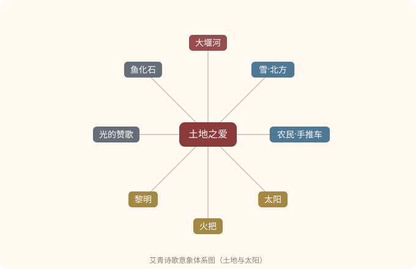

艾青诗选
一、基本信息
| 作者 | 艾青 |
|---|---|
| 成书/出版 | 通行选集有多种版本（学习时报文章称《艾青诗选》有多个版本含英法译本流传甚广）；代表诗作集中于1933—1948年 诗咏人民的赤子诗人——走进浙江金华艾青故里（学习时报，人民网党史频道）（官方期刊） |
| 国别/地区 | 中国 |
| 时代 | 现当代 · 现代—当代 |
| 体裁 | 诗集（选集） |
| 语言 | 汉语（白话自由诗） |

艾青诗歌意象体系图（土地与太阳）（人物关系图）
二、创作背景
《艾青诗选》是中国读者接触艾青最通行的窗口，版本众多（人民文学出版社、人民教育出版社语文推荐阅读丛书等——学习时报文章称其'有多个版本，含英、法译本流传甚广'）。本条目以'选集'立目，以诗人的代表作群为内容单元（选目因版本而异，逐篇目待核）。
艾青的创作分三期：前期（1932—1948）以土地与苦难书写抗战中国的血泪，是成就最高的时期；中期（1950年代）歌颂性写作艺术上平平；后期（1979年后）'归来的诗'重获哲思深度（分期为学界通说，待核）。
诗与画：艾青本是画家（杭州艺专、巴黎），其诗的意象经营、色彩感与构图感直接来自绘画训练（通说，其自述'诗人应该是画中人'类语待核）。
三、内容脉络
成名作《大堰河——我的保姆》（1933，狱中作）：以雪、坟、瓦菲、乌黑的手掌等意象追怀乳母——一个地主之子跪写的感恩与忏悔诗，同时是对'不公平的世界的咒语'。
抗战时期的代表作：《我爱这土地》（1938）——'为什么我的眼里常含泪水？因为我对这土地爱得深沉……'（名句为作品原文，公有领域）；《雪落在中国的土地上》以反复的'雪落'句式写民族苦难；《北方》写荒凉的北方与农民；《向太阳》《火把》转向光明与集体行动的诗。
复出之作（1978年后）：《鱼化石》《盆景》《镜子》《光的赞歌》《古罗马的大斗技场》——从苦难书写转向生命与历史的沉思；'归来的诗'被认为达到甚至超越其前期成就（学界有此评，待核）。
四、主要人物表
| 人物 | 身份 | 说明 |
|---|---|---|
| 大堰河 | 乳母·贫苦农妇 | 诗人情感的源头：'我是吃了你的奶而长大了的，大堰河的儿子'（原文为公有领域） |
| 土地/农民 | 贯穿意象群 | 苦难中国的化身 |
| 太阳/火把 | 贯穿意象群 | 光明、行动与希望 |
| 抒情主人公'我' | 忧国者 | 从忏悔的游子到民族的歌者 |
五、主题与艺术特点
- 土地情结：对土地与农民的爱是艾青全部诗歌的情感底盘（'爱得深沉'）；学习时报文章称其为'扎根土地的人民诗人'。
- 忧郁与光明：'艾青式忧郁'不是颓废而是深沉的爱；太阳意象的反复出现给出救赎方向。
- 自由体的诗学：以口语的节奏与散文的呼吸入诗，反对格律束缚——中国自由诗在他的手里立定（通说）。
- 绘画性意象：每个意象如画面般可见（雪、灯、手、河），诗歌的'可视性'是其艺术标记。
六、影响与评论
- 学习时报（人民网党史频道）：'农民的诗人''人民的诗人'，代表作遍及《大堰河》《向太阳》《火把》《雪落在中国的土地上》等；《艾青诗选》含英法译本流传甚广。
诗咏人民的赤子诗人——走进浙江金华艾青故里（学习时报，人民网党史频道）（官方期刊） - 学习时报：1985年获法国文学艺术最高勋章；1942年延安文艺座谈会亲历者——其诗学与《在延安文艺座谈会上的讲话》的互动构成现代诗歌史的重要线索。
诗咏人民的赤子诗人——走进浙江金华艾青故里（学习时报，人民网党史频道）（官方期刊） - 通识教育：《我爱这土地》《大堰河——我的保姆》选入中学语文教材（通说，教材版本清单待核），是接受人口最多的现代诗人之一。
诗咏人民的赤子诗人——走进浙江金华艾青故里（学习时报，人民网党史频道）（官方期刊） - Britannica 中国文学条目对新诗传统的描述（as linked question 出现于该条目，正文未详）——国际学界的定位待补强（本条为提示性引用）。
Chinese literature — Encyclopaedia Britannica（百科全书）
七、阅读建议
难点
- 自由诗'没有形式'的表象下有精密的节奏设计，需朗读体会。
- 意象系统（土地/太阳）需整体把握，单首阅读会低估其结构。
- 抗战语境（流亡、沦陷、大后方）需要历史背景补充。
- 《艾青诗选》（人民文学出版社，含1979年后新篇的通行选本）：入门首选。
- 《艾青全集》（花山出版社等）：研究型全集。
- 《我爱这土地：艾青诗选》（人民教育出版社'语文推荐阅读'）：学生版注释。
先读《我爱这土地》《大堰河——我的保姆》两大名篇 → 再读《雪落在中国的土地上》《北方》体会'土地'意象 → 读《向太阳》《火把》看其光明转向 → 最后读复出后的《鱼化石》《光的赞歌》。
八、待核实
- 选集具体篇目与篇数因版本而异，本页不列固定目录（逐版本目录待核）。
- 《我爱这土地》《大堰河》写作与发表年份（1938年11月/1933年1月，通说）逐条待核。
- 复出后获奖（诗集奖等）清单待核。
- 英译本（如 Robert Payne 1950年代译本等）信息待核。
本页主要来源
艾青的其他收录作品：艾青诗选